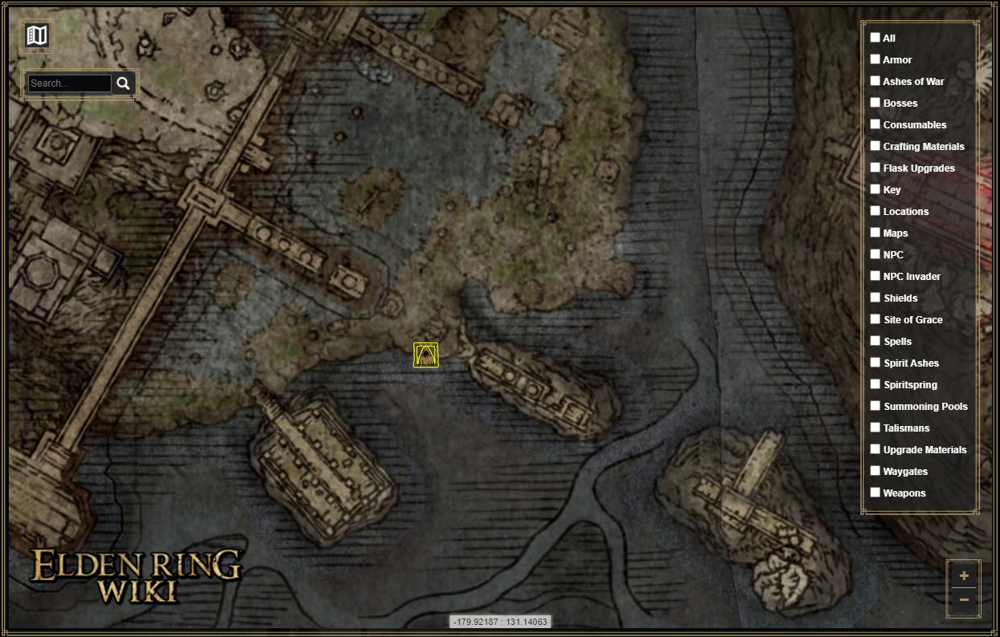

Elden Ring Map: Absolutely not interactive | Elden Wiki
On this map, you can see the location of Blaidd on the original Elden Ring map.

On this map, you can see the location of Blaidd on the original Elden Ring map.